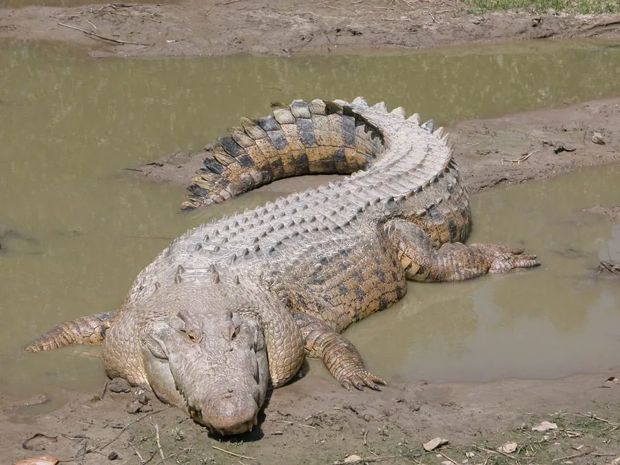

爬行动物 · 动物界
湾鳄 Crocodylus porosus

现存体型最大的爬行动物，可长逾 6 米，能适应海水环境，广泛分布于东南亚至澳大利亚的海岸与河口。
- 分类
- 门脊索动物门纲爬行纲目鳄目科鳄科属鳄属
- 栖息环境
- 热带与亚热带的海岸、河口、红树林、潟湖及淡水沼泽
- 地理分布
- 印度以东的东南亚、澳大利亚北部及西太平洋岛屿海岸
- 保护级别
- IUCN 无危（LC）；CITES 附录Ⅰ（澳大利亚部分种群附录Ⅱ）
物种志
湾鳄是现存体型最大的爬行动物，雄性体长常达 4–5 米，个别记录超过 6 米，体重可逾 1000 kg。它身躯粗壮，背面呈暗橄榄色或灰褐色，腹部淡黄，吻部宽大，尾部侧扁强壮；头顶有盐腺，可通过“流泪”的方式排出多余盐分，因此得名“咸水鳄”。
湾鳄是少数能长时间在海洋中活动的大型鳄类，栖息于河口、红树林、潟湖与海岸，性情凶猛，会主动捕食鱼类、海龟、水鸟、野猪甚至家畜。每年 11 月至次年 3 月繁殖，雌鳄在水边堆筑巢丘，产卵约 40–90 枚，孵化期 80–90 天，母鳄会守护巢穴和幼鳄。其皮革与鳄肉曾引发大规模捕杀，现受国际公约保护，澳大利亚与东南亚部分地区的保护举措使种群有所恢复。
形态与习性
- 食性鱼、龟、水鸟、哺乳动物，甚至小型鲨鱼
- 体长雄性 4–5.5 m，最长记录约 6.3 m
- 体重常为 400–1000 kg
- 寿命野外可达 70 年
- 繁殖卵生，每窝 40–90 枚，孵化期约 80–90 天
- 活动节律多在晨昏和夜间活动，白天晒背调节体温
- 防御咬合力极强，领地意识强，会主动驱赶入侵者
趣味知识
- 湾鳄可以连续数小时在海中游动，借助洋流跨越大片海域。
- 它的头部有盐腺，能排出体内多余盐分，所以能在咸水中生活。
- 20 世纪澳大利亚曾因捕杀使湾鳄数量锐减，受保护后已明显回升。